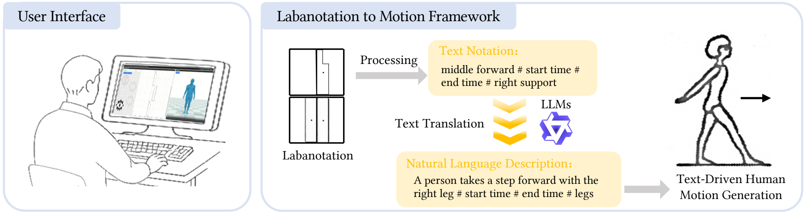
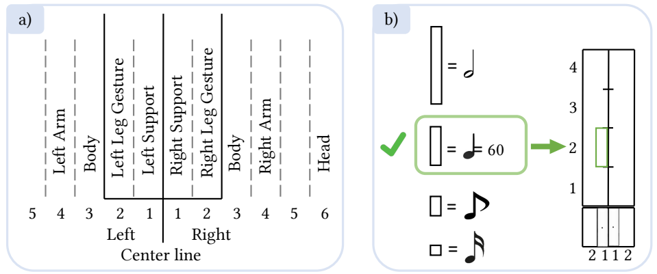
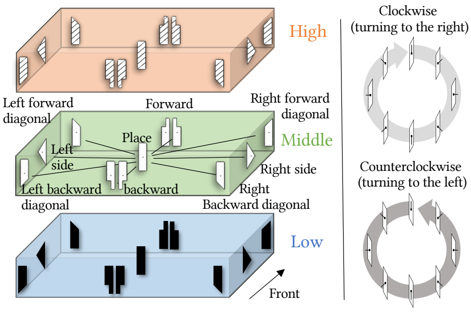
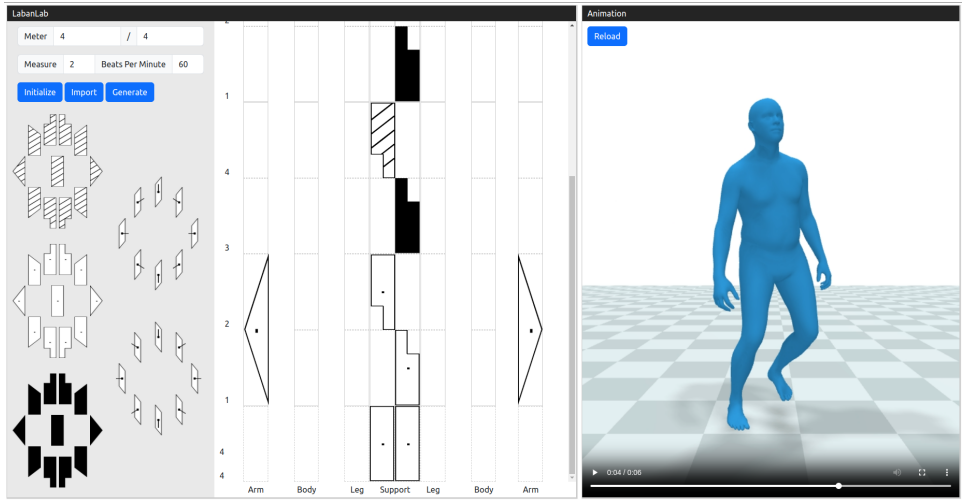
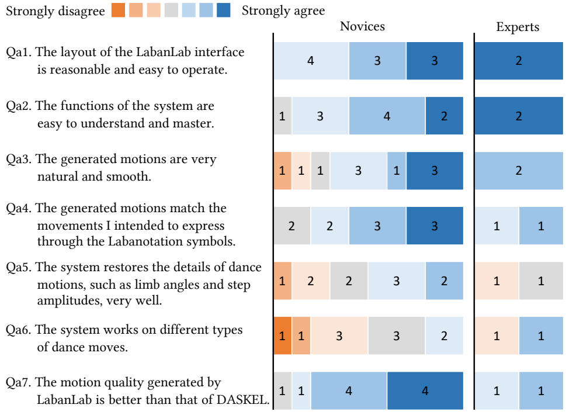
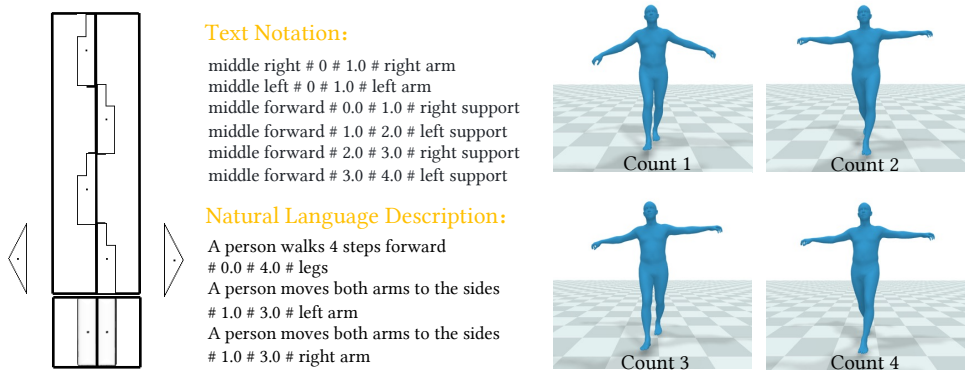

Zhe Yan 1 , Borou Yu 2 , Zeyu Wang 1,3†
1 The Hong Kong University of Science and Technology (Guangzhou), China 2 University of California, Santa Barbara, Media Arts and Technology Program, USA 3 The Hong Kong University of Science and Technology, China


Abstract
This paper introduces LabanLab, a novel choreography system that facilitates the creation of dance notation with motion preview. LabanLab features an interactive interface for creating Labanotation staff coupled with visualization of corresponding movements. Leveraging large language models (LLMs) and text-to-motion frameworks, LabanLab translates symbolic notation into natural language descriptions to generate lifelike character animations. As the first web-based Labanotation editor with motion synthesis capabilities, LabanLab makes Labanotation an input modality for multitrack human motion generation, empowering choreographers with practical tools and inviting novices to explore dance notation interactively.
CCS Concepts
· Computing methodologies → Animation; · Human-centered computing → Web-based interaction; · Applied computing → Arts and humanities;
1. Introduction
Labanotation, one of the most comprehensive and widely adopted systems for documenting movement, provides a precise framework for recording the spatial and temporal aspects of choreography [Gue70]. Much like musical notation captures the nuances of composition, Labanotation aims to preserve the intricate spatial trajectories, body dynamics, and timing of dance, offering choreographers a precise tool for documentation and reproduction.
† Corresponding author, e-mail: zeyuwang@ust.hk
Other dance notation systems, such as Benesh Notation, known for its visual, score-like approach, and Eshkol-Wachman Notation, which emphasizes geometric relationships, also contribute to the field. However, dance analysis systems often require specialized training, making them accessible primarily to professional choreographers. For most individuals, learning dance remains a process of mimicking movements from videos or receiving hands-on guidance and corrections from instructors. This limitation has confined the use and understanding of dance notation to a niche audience, hindering its broader adoption.
Compared to traditional handwritten dance notation, computational tools like Labanotator provide digital interfaces for creating and editing dance notation, streamlining workflows. However, the execution of these methods remains unintuitive, as users lack clear visualizations of how the notation corresponds to actual motions. DASKEL [LYW23] enables bidirectional conversion between human skeleton movements and Labanotation but relies on traditional kinematic techniques, which often produce unnatural and rigid motion. With advances in AI, techniques such as diffusion models [TRG∗ 23], VAEs [HHS∗ 17], and LLM-based methods [ZHL∗ 24] leverage large datasets to create smoother and more expressive motion. Deep learning models trained in dance datasets have shown promise in generating more humanlike choreography. Jiang et al. [JAC∗ 24] proposed the LBN-MAE to generate motions with Labanotation. However, there is still no publicly available Labanotation-motion dataset.
We propose LabanLab, a web-based choreography platform aimed at democratizing Labanotation and bridging accessibility with professional utility. LabanLab features an intuitive interface for creating Labanotation staff, paired with a real-time visualization window to preview corresponding movements (Figure 1). This interactive setup enables users to refine choreography efficiently. For the Labanotation-motion framework, we aim to utilize prior knowledge from text-to-motion models. It uses Large Language Models (LLMs) to translate Labanotation symbols into natural language descriptions, which are then processed by the Spatio-Temporal Motion Collage (STMC) [PLI∗ 24] to generate animations.
LabanLab represents the first online Labanotation editor with motion synthesis capabilities, streamlining the process of creating and visualizing dance notation. By positioning Labanotation as a novel input modality for controlling spatial-temporal multitrack motion generation, LabanLab goes beyond traditional text or music inputs, offering a new method for precise and expressive motion control. These innovations provide choreographers with a practical tool, while users can engage with dance notation in an interactive and approachable way. Through this work, we aim to bridge the gap between symbolic and physical representations of dance, advancing the intersection of computational tools, motion synthesis, and artistic expression.
2. A Symbolic Representation of Movement
Labanotation is designed to document human movement, written on a staff that represents the human body and is read from the bottom up (Figure 2). The center line represents the body's midline, with vertical columns indicating specific body parts. Leg and foot movements are noted between the three solid vertical lines, while the torso, arms, and head are shown in the outer columns. The support column, closest to the center, is crucial for documenting weight shifts, balance, and transitions like bouncing or falling. By default, both feet are assumed to support body weight unless the support column specifies otherwise.
Similar to musical notation, Labanotation also utilizes the staff to denote measures and counts. The symbols written on the staff indicate the body parts performing the movements and convey spatial information. (Figure 3). A double horizontal line signifies the beginning of the movement. In Figure 2, symbols preceding this line denote the starting posture, whereas the notation immediately following the line represents a 4/4 time measure. The staff marks the duration of the fundamental unit of time. In the example, each count is defined as the duration of a quarter note. The performance tempo is set at M.M. ♩= 60, where M.M. (Mälzel's Metronome) is equivalent to Beats Per Minute (BPM).




3. The LabanLab System
We introduce LabanLab, an automated Labanotation visualization tool. Users can create choreography directly on our web-based interface and visualize the corresponding motion.
3.1. Front-End Interface: Facilitating Choreography
The frontend of LabanLab is bulit with HTML and Vue.js. The user interface is divided into three main sections: the sidebar, the Labanotation staff area, and the motion display panel (Figure 4).
The left sidebar functions as the initialization panel, allowing users to configure choreography settings. These include the number of measures, counts per measure, beats per minute, and the musical note value that defines the duration of each count (e.g., half note, quarter note, or eighth note). This high degree of customization supports the creation of dance sequences with diverse rhythmic patterns, accommodating various musical styles and choreographic intentions. Additionally, the sidebar offers symbol vocabularies for directions and rotations.


The central Labanotation staff area is a workspace where users can construct choreography by dragging and dropping Laban symbols from the sidebar onto the staff. Movements for each body part are specified by placing the corresponding symbols into designated columns, enabling users to create detailed and sequential choreographic instructions. By default, each symbol dragged from the sidebar spans one count. Users can modify the symbol's duration by resizing its upper and lower edges directly on the staff. The minimum adjustment unit is one-quarter of a count, allowing for fine-grained control over movement timing. Additionally, users can rearrange symbols using drag-and-drop or remove them via a right-click menu.
User-created choreographic notations are stored in JSON format and can be reimported for further editing, enhancing reusability and collaboration. This makes the system a versatile tool for users.
Once the choreography is finalized, users can click the "Generate" button to preview the movements. Within seconds, the animation display panel presents a visualization of the choreographed sequence. This feature enables users to visually review their work and adjust it as needed, ensuring that the final choreography aligns with their creative intent.
3.2. Back-End Framework: Generating Motion Preview
The backend of LabanLab is developed using Flask and Python, which converts Labanotation inputs into movements. Given that the existing Labanotation-to-motion algorithms are highly immature and publicly available datasets are scarce, we address this gap by leveraging established text-to-motion algorithms.
A key challenge in dance generation lies in dealing with complex choreography that encompasses both sequential actions over time and coordinated actions of different body parts in space. Our system addresses this by first converting the input Labanotation into structured text notation. We then employ Large Language Models (LLMs), specifically the Qwen-Max model with a temperature setting of 0.85, to interpret choreographic context and translate the text notation into meaningful natural language descriptions. To synthesize motion, we integrate STMC [PLI∗ 24], a diffusion-based framework for text-driven 3D human motion generation. STMC processes multi-track timeline inputs by denoising each text prompt and integrating the outputs spatially and temporally, enabling the generation of realistic motions that align with the semantics and timing of the input
3.3. LLMs: A Labanotation-Motion Translation Bridge
The dance notation constructed through the interface is first structured into a standardized format, where each movement event is represented as follows:
For translations: <Level> <Direction> # <Start time> # <End time> # <Body part>.
For rotations: <Rotation direction> <Angle> # <Start time> # <End time> # <Body part>.
The values for each tag are derived from the Labanotation staff configuration, timing settings, and selected symbols.
We adopt a Prompt Engineering strategy combined with Retrieval-Augmented Generation (RAG) for translation. This approach constructs a database of text annotations paired with corresponding natural language descriptions. During translation, the LLM retrieves relevant examples from the database to guide and refine its output. Prompt Engineering ensures that the instructions to the LLM clearly define the task, incorporate relevant constraints, and provide sufficient context for accurate generation. The output of each translated event is formatted as: <Natural language description of the movement> # <Start time> # <End time> # <Body part>.
Herein, body parts are limited to legs, spine, head, left arm, and right arm to align with the STMC input requirements. We implement the following principles for prompt design to ensure accurate and consistent natural language translations:
1. Convert each individual movement event from text notation into a coherent natural language description.
2. Interpret choreographic intent in context. The meaning of Labanotation symbols depends on context, which includes preceding movements, body posture, and transitions, rather than a strict one-to-one mapping. To convey intent effectively, the LLMmust interpret movements holistically, integrating multiple body parts into cohesive descriptions using precise verbs that reflect coordinated motion.
4. User Study
We recruited 12 participants for the user study, including 10 novices and 2 Labanotation experts (5 males and 7 females), aged between 22 and 30. At the beginning of the study, participants received a five-minute introduction to the basics of Labanotation and an overview of how to use LabanLab. During the study, participants were first given 5 minutes to create choreography by selecting and dragging a single symbol onto the staff, representing the movement of a specific body part. This step was designed to assess the system's effectiveness in generating basic movements. Next, participants were allotted 10 minutes to compose more complex choreography involving combinations of movements across multiple body parts. Following the task, participants completed a seven-point Likert scale user satisfaction survey (Figure 5) to evaluate their experience with the system and participated in follow-up interviews for further qualitative insights.


Figure 5 · Read the responses as text
The counts are transcribed from the original chart. Each sequence lists seven response categories from strongly disagree (1) to strongly agree (7). A zero indicates no responses.
| Statement | Novices (10) | Experts (2) |
|---|---|---|
| Qa1. The layout of the LabanLab interface is reasonable and easy to operate. | 0, 0, 0, 0, 4, 3, 3 | 0, 0, 0, 0, 0, 0, 2 |
| Qa2. The functions of the system are easy to understand and master. | 0, 0, 0, 1, 3, 4, 2 | 0, 0, 0, 0, 0, 0, 2 |
| Qa3. The generated motions are very natural and smooth. | 0, 1, 1, 1, 3, 1, 3 | 0, 0, 0, 0, 0, 2, 0 |
| Qa4. The generated motions match the movements I intended to express through the Labanotation symbols. | 0, 0, 0, 2, 2, 3, 3 | 0, 0, 0, 0, 1, 1, 0 |
| Qa5. The system restores the details of dance motions, such as limb angles and step amplitudes, very well. | 0, 1, 2, 2, 3, 2, 0 | 0, 0, 1, 1, 0, 0, 0 |
| Qa6. The system works on different types of dance moves. | 1, 1, 3, 3, 2, 0, 0 | 0, 0, 1, 0, 0, 1, 0 |
| Qa7. The motion quality generated by LabanLab is better than that of DASKEL. | 0, 0, 0, 1, 1, 4, 4 | 0, 0, 0, 0, 1, 1, 0 |
5. Conclusion
Interviews revealed that most novices found LabanLab helpful for understanding and learning Labanotation, sparking their interest in the field. Experts noted that the system effectively addressed limitations in existing choreography software, praising its intuitive webbased interface for improving efficiency. However, compared to professional tools, LabanLab supports only a fundamental subset of symbols, limiting the diversity of dance styles it can create.
Participants generally found that the generated motions aligned well with their intended movements and outperformed DASKEL, particularly in terms of naturalness and smoothness. However, the generated motions lacked artistic expression and fine-grained dance details, likely due to the limitations of the HumanML3D dataset [GZZ∗ 22], which primarily consists of everyday motions. Moreover, since HumanML3D annotations are event-based and coarser in granularity than our detailed natural language descriptions, some failure cases resulted in incomplete or mismatched motion components.
Future work should focus on developing dedicated Labanotation-dance datasets to improve both motion accuracy and artistic quality. Given the diversity of dance styles, datasets should be categorized accordingly and more labanotation symbols should be included. With these datasets, fine-tuning the STMC model can further enhance generation quality. To improve usability, we can add a beat counter to the visualizer, enabling users to pause and align motions with graphical notation. Additionally, integrating tutorials and guidance into the interface would enhance accessibility for novices.


Figure 6 · Read the notation and generated text
Text Notation:
- middle right # 0 # 1.0 # right arm
- middle left # 0 # 1.0 # left arm
- middle forward # 0.0 # 1.0 # right support
- middle forward # 1.0 # 2.0 # left support
- middle forward # 2.0 # 3.0 # right support
- middle forward # 3.0 # 4.0 # left support
Natural Language Description:
- A person walks 4 steps forward # 0.0 # 4.0 # legs
- A person moves both arms to the sides # 1.0 # 3.0 # left arm
- A person moves both arms to the sides # 1.0 # 3.0 # right arm
References
[Gue70] GUEST A. H.: Labanotation, or, Kinetography Laban: the System of Analyzing and Recording Movement., revised and expanded edition ed., vol. 21 cm. Theatre Arts Books, New York, N.Y., 1970. URL: https://search.library.wisc.edu/ catalog/999613079202121. 1
[GZZ∗ 22] GUO C., ZOU S., ZUO X., WANG S., JI W., LI X., CHENG L.: Generating Diverse and Natural 3D Human Motions From Text. In Proceedings of the IEEE/CVF Conference on Computer Vision and Pattern Recognition (CVPR) (June 2022), pp. 5152-5161. 4
[HHS∗ 17] HABIBIE I., HOLDEN D., SCHWARZ J., YEARSLEY J., KOMURA T.: A Recurrent Variational Autoencoder for Human Motion Synthesis. In British Machine Vision Conference (2017). URL: https: //api.semanticscholar.org/CorpusID:9123693. 2
[JAC∗ 24] JIANG J., AU H. Y., CHEN J., XIANG J., CHEN M.: Motion Part-Level Interpolation and Manipulation over Automatic Symbolic Labanotation Annotation. In 2024 International Joint Conference on Neural Networks (IJCNN) (2024), pp. 1-8. doi:10.1109/ IJCNN60899.2024.10650779. 2
[LYW23] LUO S., YU B., WANG Z.: DASKEL: An Interactive Choreographical System with Labanotation-Skeleton Translation. In Pacific Graphics Short Papers and Posters (2023), Chaine R., Deng Z., Kim M. H., (Eds.), The Eurographics Association. doi:10.2312/pg. 20231269. 2
[PLI∗ 24] PETROVICH M., LITANY O., IQBAL U., BLACK M. J., VAROL G., PENG X. B., REMPE D.: Multi-Track Timeline Control for Text-Driven 3D Human Motion Generation. In CVPR Workshop on Human Motion Generation (HuMoGen) (June 2024). arXiv: 2401.08559. 2, 3
[TRG∗ 23] TEVET G., RAAB S., GORDON B., SHAFIR Y., COHEN-OR D., BERMANO A. H.: Human Motion Diffusion Model. In The Eleventh International Conference on Learning Representations (2023). URL: https://openreview.net/forum?id=SJ1kSyO2jwu. 2
[ZHL∗ 24] ZHANG Y., HUANG D., LIU B., TANG S., LU Y., CHEN L., BAI L., CHU Q., YU N., OUYANG W.: MotionGPT: Finetuned LLMs Are General-Purpose Motion Generators. In Proceedings of the Thirty-Eighth AAAI Conference on Artificial Intelligence and ThirtySixth Conference on Innovative Applications of Artificial Intelligence and Fourteenth Symposium on Educational Advances in Artificial Intelligence (2024), AAAI'24/IAAI'24/EAAI'24, AAAI Press. doi: 10.1609/aaai.v38i7.28567. 2